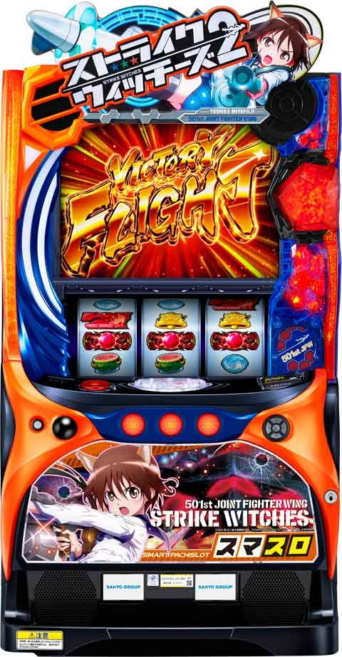

Lストライクウィッチーズ

 狙い目
狙い目
[ボーナス間天井狙い]
液晶570Gから
[スルー天井狙い]
5スルー 0Gから
4スルー液晶500Gから
[有利区間切れ狙い]
不明
[リセット狙い]
300Gから(朝イチ液晶とズレない)
やめ時
ネウロイバトル敗北後は50G+αフォロー？
上位AT後は引き戻しで上位AT突入なためフォロー必須？
参考元
基本情報
- メーカー: サンスリー
- 機械割: 97.6% 〜 114.9%
- 導入開始日: 2024年02月05日（月）
- ゲーム性概要: スマスロで『Lストライクウィッチーズ2』が登場する。


打ち方
打ち方・小役
打ち方（小役狙い）
［最初に狙う絵柄］

左リール上段付近にBARを目押し。
［コア狙え発生時］

通常時はコア高確中にのみ発生する要素で、コアが停止すればレア役扱い。停止個数が多いほど期待できる。 ボーナス中やAT中も活躍する。
［BAR下段停止］ 成立役：ハズレorリプレイor押し順ベル正解or共通ベルorチャンス目

［角チェリー停止］ 成立役：弱チェリーor強チェリー

［スイカ上段停止］ 成立役：スイカorチャンス目

［スイカ中段停止］ 成立役：スイカorチャンス目

左リールBAR上段ビタ押し時に停止する可能性がある。
［レア役の停止形］

変則押しはNG

通常時はナビ発生時を除き、左1stでの消化を推奨だ。
解析情報通常時
小役関連
小役確率
| 役 | 確率 |
|---|---|
| リプレイ | 1/7.3 |
| 弱チェリー | 1/81.5 |
| 強チェリー | 1/819.2 |
| チャンス目 | 1/297.9 |
| スイカ | 1/77.5 |
| 左1stの押し順ベル | 1/40.3 |
| 共通ベル | 1/30.3 |
| 1枚役（ハズレ扱い） | 1/1.3 |
| 押し順ベル合算 | 1/1.6 |
| レア役合算 | 1/33.6 |
| レア役＋コア停止合算 | 1/5.2 |
コア停止確率（コア高確中・ネウロイバトル中）
| 停止個数 | 確率 |
|---|---|
| 1個 | 1/8.2 |
| 2個 | 1/24.8 |
| 3個 | 1/16384.0 |
| トータル | 1/6.2 |
撃墜チャレンジ（CZ）当選率
| 役 | 通常状態 | GC高確 | GC超高確 |
|---|---|---|---|
| その他 | － | － | 1.56% |
| 共通ベル | － | － | 33.59% |
| 弱チェリー | 0.78% | 5.47% | 50.00% |
| 強チェリー | 80.47% | 100% | 100% |
| スイカ | 0.78% | 5.47% | 50.00% |
| チャンス目 | 20.31% | 50.00% | 100% |
| コア1個停止 | 12.50% | 25.00% | 75.00% |
| コア2個停止 | 25.00% | 50.00% | 100% |
※コア停止はコア高確中のみ
内部状態関連
GC高確
通常時・撃墜チャレンジ（CZ）中共通で、50G消化ごとに滞在モードを参照してGC高確・GC超高確への移行を抽選。高確以上滞在中はCZ当選期待度がアップする。 高確・超高確ともに保証ゲーム数は15G間、保証分消化後はレア役以外で通常状態への転落を抽選する。
GC高確 性能
| 項目 | 内容 |
|---|---|
| 移行契機 | 50G消化ごとの抽選、小役契機の抽選 |
| 序列 | 通常＜高確＜超高確 |
| 高確・超高確ゲーム数 | 15G＋α |
| 滞在中の特徴 | 上位状態ほど撃破チャレンジ当選率アップ |
［ゲーム数契機］GC高確移行テーブル
| ゲーム数 | 通常A | 通常B | 通常C | 通常D |
|---|---|---|---|---|
| 1G | ✕ | ▲ | ✕ | ▲ |
| 51G | ▲ | ▲ | ▲ | ▲ |
| 101G | ▲ | ▲ | ▲ | ▲ |
| 151G | ✕ | ✕ | ✕ | ✕ |
| 201G | △ | △ | △ | 〇 |
| 251G | ✕ | ✕ | ▲ | ▲ |
| 301G | ▲ | ▲ | ▲ | ▲ |
| 351G | ✕ | ▲ | ✕ | ▲ |
| 401G | ▲ | ▲ | ▲ | ▲ |
| 451G | ✕ | ✕ | ✕ | － |
| 501G | ▲ | ▲ | ▲ | － |
| 551G | ✕ | ▲ | ✕ | － |
| 601G | ✕ | ✕ | ✕ | － |
| 651G | ▲ | ▲ | － | － |
| 701G | △ | △ | － | － |
| 751G | ✕ | ▲ | － | － |
| 801G | ▲ | ▲ | － | － |
| 851G | ✕ | － | － | － |
| 901G | ▲ | － | － | － |
| 951G | ✕ | － | － | － |
※通常時だけでなく撃墜チャレンジ（CZ）中も抽選
［小役契機］GC高確当選率
| 役 | GC高確へ | GC超高確へ |
|---|---|---|
| その他 | － | － |
| 共通ベル | 7.81% | 0.78% |
| 弱チェリー | 49.22% | 0.78% |
| 強チェリー | － | － |
| スイカ | 28.13% | 5.47% |
| チャンス目 | － | － |
※高確中の超高確当選時は保証ゲームを加算（高確→高確は抽選しない）
GC高確の保証ゲーム数振り分け
| 保証ゲーム数 | 振り分け |
|---|---|
| 15G | 75.00% |
| 25G | 23.44% |
| 35G | 1.56% |
［レア役以外］保証ゲーム数消化後の転落率
| 役 | 通常へ転落 | 高確＆超高確継続 |
|---|---|---|
| レア役以外 | 94.53% | 5.47% |
| レア役 | － | 100% |
コア高確

GC高確と同じく、50G消化ごとにコア高確への移行を抽選。コア高確滞在中はコアを狙え演出からコアが停止するようになるため、CZに当選しやすい。
コア高確 性能
| 項目 | 内容 |
|---|---|
| 移行契機 | 50G消化ごとの抽選 |
| 保証ゲーム数 | 10～30G |
| 終了契機 | 保証ゲーム終了後のレア役以外時の94.53% |
| 滞在中の特徴 | コア狙えからコアが停止するようになる |
コア高確移行テーブル
| ゲーム数 | 通常A | 通常B | 通常C | 通常D |
|---|---|---|---|---|
| 1G | 1.56% | 12.50% | 1.56% | 12.50% |
| 51G | 12.50% | 50.05% | 12.50% | 50.05% |
| 101G | 12.50% | 12.50% | 12.50% | 50.05% |
| 151G | 1.56% | 1.56% | 1.56% | 1.56% |
| 201G | 100% | 100% | 100% | 100% |
| 251G | 1.56% | 1.56% | 12.50% | 50.05% |
| 301G | 50.05% | 12.50% | 50.05% | 12.50% |
| 351G | 1.56% | 50.05% | 1.56% | 12.50% |
| 401G | 50.05% | 12.50% | 50.05% | 50.05% |
| 451G | 1.56% | 1.56% | 1.56% | － |
| 501G | 12.50% | 50.05% | 12.50% | － |
| 551G | 1.56% | 12.50% | 1.56% | － |
| 601G | 1.56% | 1.56% | 1.56% | － |
| 651G | 50.05% | 12.50% | － | － |
| 701G | 100% | 100% | － | － |
| 751G | 1.56% | 12.50% | － | － |
| 801G | 50.05% | 50.05% | － | － |
| 851G | 1.56% | － | － | － |
| 901G | 50.05% | － | － | － |
| 951G | 1.56% | － | － | － |
※通常時だけでなく撃墜チャレンジ（CZ）中も抽選
移行タイミング別・高確ゲーム数振り分け
| タイミング | 10G | 20G | 30G |
|---|---|---|---|
| 1.56%時の当選 | 50.00% | 50.00% | － |
| 12.50%時の当選 | 81.25% | 12.50% | 6.25% |
| 50.05%時の当選 | 87.49% | 9.38% | 3.13% |
| 100%時の当選 | 93.75% | 4.69% | 1.56% |
コア高確当選時の前兆ゲーム数振り分け
| 前兆 | 振り分け |
|---|---|
| 5G | 31.25% |
| 10G | 50.00% |
| 15G | 6.25% |
| 20G | 12.50% |
モード
通常モード概要
通常時は4つのモードでゲーム数天井や50G消化ごとのGC高確やコア高確移行率が変化する。 基本的に上位のモードほど高確へ移行しやすい。
通常モードごとの天井
| モード | 天井ゲーム数 |
|---|---|
| 通常A | 950G＋α |
| 通常B | 800G＋α |
| 通常C | 600G＋α |
| 通常D | 400G＋α |
ネウロイモード概要
通常モードとは別軸で、ストライクボーナス後のネウロイバトルで登場するネウロイの種類に影響するネウロイモードが存在。 モードは0〜3の4段階で、 高設定ほど上位のモードが選ばれやすい 。 モードはネウロイバトル敗北まで維持されるため、初当り時のバトルはもちろん、突破後のごほうびATとネウロイバトルのループ期待度にも影響する。
ネウロイモードの序列
| モード | 上位ネウロイ登場期待度 |
|---|---|
| モード0 | 低 |
| モード1 | ↓ |
| モード2 | ↓ |
| モード3 | 高（X-22出現濃厚） |
［設定変更時］通常モード振り分け
| モード | 振り分け |
|---|---|
| 通常A | － |
| 通常B | 49.22% |
| 通常C | 49.22% |
| 通常D | 1.56% |
［超大型ネウロイバトル敗北後］振り分け
| 設定 | モード0 | モード1 | モード2 | モード3 |
|---|---|---|---|---|
| 全設定 | 66.40% | 29.69% | 3.13% | 0.78% |
引き戻し状態
引き戻し抽選
ネウロイバトル、超大型ネウロイバトル失敗後は一定の確率で引き戻し（AT当選）を抽選。当選時はすぐに告知されるわけではなく、 50G間の引き戻し告知状態 へ突入する。告知当選時はレバーON〜第3停止時のいずれかで超PUSH演出が発生して告知。 50G間、告知に当選しなかった場合は50G到達時後に引き戻し状態へ移行する。 超大型ネウロイバトル後ならビクトリーフライト（上位AT）が確定するため50G＋αは追うことをオススメだ。 ビクトリーフライト（上位AT）終了後のビクトリーフライトチャレンジ終了後も同様の抽選がおこなわれる。
※50G間に自力でCZやストライクボーナスに当選した場合は引き戻しの対象外
経路別・引き戻し当選率
| 経路 | 当選率 |
|---|---|
| ネウロイバトル敗北時 | 2.34% |
| 超大型ネウロイバトル敗北後 | 7.03% |
| ビクトリーフライトチャレンジ失敗後 | 7.03% |
引き戻し当選後・放出当選率（毎ゲーム抽選）
| 設定 | 当選率 |
|---|---|
| 全設定 | 1.56% |
［超PUSH演出］

［ネウロイ侵食］

引き戻し区間では画面の周囲にネウロイ侵食のエフェクトが表示される。
撃墜チャレンジ（CZ）
撃墜チャレンジ（CZ）概要

消化中は全役でパネルのレベルアップを抽選していて、 レベルが上がるほどCZ後のネウロイバトル勝利期待度がアップ 。パネルはMAXの10段階目に到達した時点で勝利確定のバトルに発展する。 15G間で1度もレベルアップしなかった場合は2セット目に移行。2セット目でもレベルアップしなければストライクボーナス以上が確定する（レベル1のままバトル発展→勝利）。
撃墜チャレンジ（CZ）性能
| 項目 | 内容 |
|---|---|
| 当選契機 | レア役 |
| 継続ゲーム数 | 15G |
| 消化中の抽選 | 全役でパネルのレベルアップ抽選 ※ラストにレベルに応じてストライクボーナスを抽選 |
撃墜チャレンジ確率
| 設定 | 確率 |
|---|---|
| 1 | 1/245.6 |
| 2 | 1/245.0 |
| 3 | 1/244.8 |
| 4 | 1/243.2 |
| 5 | 1/242.6 |
| 6 | 1/240.6 |
成立役ごとのアップレベル
| 役 | アップレベル |
|---|---|
| 弱チェリー | 2段階以上アップ |
| スイカ | 2段階以上アップ |
| チャンス目 | 3段階以上アップ |
| 強チェリー | レベル10到達（ボーナス濃厚） |
| コア１個停止 | 1段階以上アップ |
| コア２個停止 | 2段階以上アップ |
| コア３個停止 | Lv10到達＆ネウロイバトル勝利（ごほうびAT濃厚） |
| その他 | 抽選に当選すると1段階以上アップ （非当選時は昇格なし） |
レベルごとのファイナルジャッジ
| レベル | 連続演出 |
|---|---|
| レベル1 | ロマーニャ防衛戦に行きやすい （勝利濃厚） |
| レベル2・3 | ロマーニャ防衛戦 |
| レベル4・5 | アドリア海撃墜戦 |
| レベル6・7 | 超加速空中戦 |
| レベル8・9 | 出撃！ストライクウィッチーズ |
| レベル10 | 出撃！ストライクウィッチーズに行きやすい （勝利濃厚） |
［パネルの種類］

レベルが上がるほど期待できる。
［ロマーニャ防衛戦］

［アドリア海撃墜戦］

［超加速空中戦］

［出撃！ストライクウィッチーズ］

レベルアップ＆継続・勝利抽選
強チェリーはレベルが10段階目までアップするためボーナス確定。チャンス目・コア2個停止時はレベル複数アップとなるだけでなく、ボーナス直撃も抽選する。内部的に敗北しているファイナルジャッジ（ラストの連続演出）中は、レア役で勝利への書き換えを抽選。 15G消化時は、パネルレベルに応じてCZの継続を抽選（漏れた場合はCZの成否をジャッジ）。当選時は15Gが再セットされる。
ファイナルジャッジ移行時のレベル別勝利期待度
| レベル | 書き換えを含まない 勝利当選率 | 書き換えを含む トータル期待度 |
|---|---|---|
| レベル1 | 100% | 100% |
| レベル2 | 3.13% | 6.9% |
| レベル3 | 5.47% | 9.3％ |
| レベル4 | 12.50% | 16.3％ |
| レベル5 | 25.00% | 28.5％ |
| レベル6 | 40.63% | 43.9％ |
| レベル7 | 54.69% | 57.4％ |
| レベル8 | 70.31% | 72.4％ |
| レベル9 | 80.47% | 81.8％ |
| レベル10 | 100% | 100% |
書き換え…ファイナルジャッジ中のレア役による勝利書き換え
パネルレベルアップ当選率
| 抽選結果 | その他 | リプレイ 共通ベル | 弱チェリー |
|---|---|---|---|
| 非当選 | 94.23% | 87.59% | － |
| 1アップ | 5.75% | 12.39% | － |
| 2アップ | 0.01% | 0.01% | 95.59% |
| 3アップ | 0.01% | 0.01% | 4.39% |
| 5アップ | － | － | 0.02% |
| 10アップ | － | － | － |
| 抽選結果 | 強チェリー | スイカ | チャンス目 |
| 非当選 | － | － | － |
| 1アップ | － | － | － |
| 2アップ | － | 95.59% | － |
| 3アップ | － | 4.39% | 96.15% |
| 5アップ | － | 0.02% | 3.85% |
| 10アップ | 100% | － | － |
| 抽選結果 | コア1個停止 | コア2個停止 | コア3個停止 |
| 非当選 | － | － | － |
| 1アップ | 93.38% | － | － |
| 2アップ | 6.57% | 49.33% | － |
| 3アップ | 0.04% | 44.09% | － |
| 5アップ | 0.01% | 6.58% | － |
| 10アップ | － | － | 100% |
ストライクボーナス直撃当選率
| 役 | 当選率 |
|---|---|
| チャンス目 | 10.16% |
| コア2個停止 | 1.56% |
ファイナルジャッジ中の勝利書き換え当選率
| 役 | 当選率 |
|---|---|
| 弱チェリー・スイカ | 10.16% |
| 強チェリー・チャンス目 | 100% |
15G消化時・CZ継続当選率
| パネルレベル | 当選率 |
|---|---|
| Lv.01 | 100% |
| Lv.02 | 5.47% |
| 上記以外 | 0.78% |
成功確定後の初期ダメージ抽選
内部的にストライクボーナスが確定している状態では、レア役でネウロイバトルの初期ダメージ（先制攻撃ダメージ）を抽選する。
勝利確定後の初期ダメージ加算当選率
| 初期ダメージ | 弱チェリー・スイカ | チャンス目・強チェリー |
|---|---|---|
| 0pt | 71.87% | － |
| 1pt | 25.00% | － |
| 2pt | 3.13% | 93.75% |
| 5pt | － | 6.25% |
前兆
前兆ゲーム数
撃墜チャレンジ（CZ）前兆は最大27G、ストライクボーナス前兆は 最大27G 。CZ前兆中にストライクボーナスに当選した場合、CZ前兆ゲームスを消化し終えたタイミングでストライクボーナスが告知される。
前兆ゲーム数
| 前兆種別 | 選択される可能性のあるゲーム数 |
|---|---|
| 撃墜チャレンジ | 6～9G、12～15G、18～21G、24～27G |
| ストライクボーナス | 7～10G、13～16G、19～22G、25～28G |
解析情報ボーナス時
ストライクボーナス
ストライクボーナス概要

15Gの擬似ボーナスで、消化中は終了後のネウロイバトルで使用する先制攻撃のダメージ量獲得を抽選する。
ストライクボーナス性能
| 項目 | 内容 |
|---|---|
| 当選契機 | 撃破チャレンジ（CZ）成功、直撃など |
| 継続ゲーム数 | 15G |
| 1Gあたりの純増 | 約5枚 |
| 消化中の抽選 | 先制攻撃のダメージ量獲得抽選 |
［先制攻撃のダメージ獲得］

開始時＆消化中の抽選
ストライクボーナス開始時は 滞在中のネウロイモードを参照して、ネウロイバトルで対戦するネウロイを決定 。薄い確率だが、ネウロイモード不問で超大型ネウロイバトルへの昇格も抽選する。 消化中はレア役でネウロイへの初期ダメージ（先制攻撃）を抽選。コアが揃えば50pt獲得＝ネウロイ撃破確定、余剰分のダメージは次回のネウロイバトルに持ち越しする。
超大型ネウロイバトル直行当選率
| 設定 | 当選率 |
|---|---|
| 全設定 | 0.01% |
初期ダメージ当選率
| ダメージ | 弱チェリー | 強チェリー | スイカ | チャンス目 |
|---|---|---|---|---|
| 0pt | 98.44% | － | 96.88% | － |
| 1pt | 0.78% | － | － | － |
| 2pt | 0.78% | － | 1.56% | 75.00% |
| 5pt | － | 98.44% | 1.56% | 25.00% |
| 50pt | － | 1.56% | － | － |
※コア3個停止は50pt確定
ネウロイバトル
ネウロイバトル概要

ストライクボーナス後やごほうびAT後に移行する、ごほうびATをかけたバトル。導入3Gを経て、ネウロイとのバトルパートへ移行する。 バトルのゲーム数は対戦するネウロイ（3種類）によって異なり、長いほど攻撃回数が増加＝勝利期待度が高い 。バトルパートでネウロイを撃破すれば勝利確定。撃破できなかった場合は、ネウロイの残りHPを参照してファイナルジャッジ（約7G間）で勝敗を抽選する。
「戦線復帰機能」 初回のネウロイバトルで敗北しても、100G以内にストライクボーナスを引けば対戦ネウロイ＆ダメージ量が引き継がれる（通常時画面左下にネウロイ修復中の文字が表示）。100Gを超えると対戦相手＆ダメージ量はリセットされる。
「4戦目は超大型ネウロイバトルへ」

ネウロイバトルとごほうびATをループさせ、 ネウロイバトルの4戦目 まで行けばビクトリーフライト（上位AT）をかけた超大型ネウロイバトルへ発展。勝利すればビクトリーフライトの初期ゲーム数決定ゾーン（ウィッチーズアタック）へ移行する。
ネウロイバトル性能
| 項目 | 内容 |
|---|---|
| 移行契機 | ストライクボーナス後、ごほうびAT終了後 |
| 継続ゲーム数 | 30～50G＋α（対戦ネウロイで変化） |
| 1Gあたりの純増 | 約0.8枚 |
| トータル勝率 | 約50% |
| 消化中の抽選 | ネウロイへのダメージ抽選など ※ウィッチ参戦システムや装甲破壊チャンスも抽選 |
| その他 | 勝利でごほうびATへ |
| その他 | 4戦目で必ず超大型ネウロイバトルへ ※3戦目以内に発展することもある |
対戦ネウロイごとの基本ゲーム数
| 対戦ネウロイ | ゲーム数 |
|---|---|
| X-12 | 30G |
| X-18 | 40G |
| X-22 | 50G |
各ネウロイの体力は内部的に50pt となる。
［X-12］

［X-18］

［X-22］

［バトル中］

基本的に小役が揃えば攻撃HIT（ネウロイのHP減少）。押し順当てを契機に仲間が参戦するウィッチ参戦システムや装甲破壊チャンス、コアを狙え、BARを狙えからの大ダメージなど、多彩な攻撃パターンがある。
［コア停止でダメージが育成］

コア狙え時にコアが停止する位置（左・中・右リール）には5段階のレベルが設定されていて、該当したリールにコアが止まるとレベルに応じた攻撃をしたうえ、該当リールのレベルがアップ。5段階目まで育ったリールにコアが止まればネウロイを一発撃破できる。
［ファイナルジャッジ］

残りゲーム数が0になって、 ハズレを2連続 で引くとファイナルジャッジへ（ハズレ確率1/3.0）。失敗しても一定確率で引き戻し抽選（ごほうびAT当選）がおこなわれる。
［エピソードバトル］ ファイナルジャッジに移行するタイミングでエピソードバトル「空より高く」へ発展すればAT確定。ごほうびATが500枚超の「オーバースカイボーナス」になる期待度もアップする。
ウィッチ参戦システム

押し順当てに正解すると仲間のウィッチが参戦（押し順当て正解はウィッチ参戦のみで攻撃はしない）。4組のペアがあり、ペアのキャラが揃うとペアに応じた特殊効果が発動する。特殊効果は規定ゲーム数継続して、発動中に再度同じペアが成立した場合は規定ゲーム数の上乗せが抽選される。
ウィッチの成立ペアごとの効果
| ペア | 効果 |
|---|---|
| リーネ&ペリーヌ | ゲーム数停止 |
| シャーリー&ルッキーニ | 連続攻撃 |
| エイラ&サーニャ | 装甲破壊高確 |
| バルクホルン&ハルトマン | 攻撃力アップ |
※ペア成立中のほかのペア成立で効果は複合
効果の詳細
| 効果 | 詳細 |
|---|---|
| ゲーム数停止 | 一定ゲーム数減算がストップ |
| 連続攻撃 | 非ダメージのゲームで援護攻撃発生 |
| 装甲破壊高確 | 装甲破壊の当選率アップ |
| 攻撃力アップ | 攻撃時のダメージ量が上昇 |
押し順指示を無視した場合でも、択当て時と同じく50%で仲間が参戦する。
ペア成立時の継続ゲーム数振り分け
| 継続 | ゲーム数停止 | 追撃 | 装甲破壊高確 | 攻撃力アップ |
|---|---|---|---|---|
| 2G | 96.88% | 100% | － | 59.38% |
| 3G | 3.13% | － | 92.19% | 38.28% |
| 5G | － | － | 6.25% | 2.34% |
| 7G | － | － | 1.56% | － |
※装甲破壊中も抽選値は同じ
ペア成立中のペア成立時・上乗せ継続ゲーム数振り分け
| 継続 | ゲーム数停止 | 追撃 | 装甲破壊高確 | 攻撃力アップ |
|---|---|---|---|---|
| ＋2G | 100% | 100% | 75.00% | 93.75% |
| ＋3G | － | － | 25.00% | 6.25% |
| ＋5G | － | － | － | － |
| ＋7G | － | － | － | － |
※装甲破壊中も抽選値は同じ
装甲破壊チャンス

毎ゲーム抽選される状態で、当選すると3〜10G間、バトルゲーム数の減算がストップして、毎ゲームネウロイにダメージを与えることが可能。さらに、小役揃い時は通常より大きなダメージを与えることができる。 複数ストックしていた場合は、1G消化後に再度装甲破壊チャンスへ突入する。
装甲破壊チャンスゲーム数振り分け
| ゲーム数 | 振り分け |
|---|---|
| 3G | 39.53% |
| 4G | 24.70% |
| 5G | 30.36% |
| 6G | 1.64% |
| 7G | 2.34% |
| 8G | 0.49% |
| 9G | 0.16% |
| 10G | 0.78% |
成立役（コア停止以外）ごとのダメージ振り分け
| ダメージ | ハズレ | その他の役入賞 | 弱レア役 | 強レア役 |
|---|---|---|---|---|
| 1pt | 100% | － | － | － |
| 2pt | － | 100% | － | － |
| 3pt | － | － | 68.75% | － |
| 4pt | － | － | 25.00% | － |
| 5pt | － | － | 6.25% | 100% |
※その他入賞役にはBARフェイクも含む ※攻撃力アップ中は1段階上のダメージ
コア停止時のダメージ振り分け ※各位置の回数別
| ダメージ | 1回目 | 2回目 | 3回目 | 4回目 | 5回目 |
|---|---|---|---|---|---|
| 1pt | － | － | － | － | － |
| 2pt | 100% | 88.28% | － | － | － |
| 3pt | － | 10.16% | 84.38% | － | － |
| 4pt | － | 1.56% | 12.50% | 75.00% | － |
| 5pt | － | － | 3.13% | 25.00% | 100% |
※6回目は撃破確定 ※攻撃力アップ中は1段階上のダメージ
追撃時（連続攻撃）のダメージ振り分け
| ダメージ | 振り分け |
|---|---|
| 1pt | 96.87% |
| 2pt | 3.13% |
| 3pt | － |
| 4pt | － |
| 5pt | － |
バトル中の抽選
小役入賞で1pt以上のダメージを与え、 コア停止時は回数と停止位置に応じたダメージ を与えることが可能。BAR狙えカットイン発生時は成功すれば一撃で10pt以上のダメージを与えることができる。まれに発生する赤7を狙えカットインは赤7揃い＆一撃撃破が確定。
また、内部的に敗北しているファイナルジャッジ中は、レア役で勝利への書き換えを抽選。すでに勝利 or エピソードに当選している場合、ごうほうびATの種別ランクアップが抽選される。
成立役（コア停止以外）ごとのダメージ振り分け
| ダメージ | その他の役入賞 | 弱レア役 | 強レア役 |
|---|---|---|---|
| 1pt | 100% | － | 100% |
| 2pt | － | 85.94% | － |
| 3pt | － | 12.50% | － |
| 4pt | － | 1.56% | － |
| 5pt | － | － | － |
※その他入賞役にはBARフェイクも含む ※攻撃力アップ中は1段階上のダメージ
強レア役のダメージは1ptだが、装甲破壊チャンスが確定するため、結果的に大きなダメージを与えることができる。
コア停止時のダメージ振り分け ※各位置の回数別
| ダメージ | 1回目 | 2回目 | 3回目 | 4回目 | 5回目 |
|---|---|---|---|---|---|
| 1pt | 100% | － | － | － | － |
| 2pt | － | 94.53% | － | － | － |
| 3pt | － | 5.47% | 94.53% | － | － |
| 4pt | － | － | 5.47% | 94.53% | － |
| 5pt | － | － | － | 5.47% | 100% |
※6回目は撃破確定 ※攻撃力アップ中は1段階上のダメージ
装甲破壊チャンス当選率
| 役 | 非高確中 | 高確中 |
|---|---|---|
| 共通ベル | － | 25.00% |
| 弱レア役 | 12.50% | 100% |
| 強レア役 | 100% | 100% |
装甲破壊チャンス当選時は最大1Gの前兆を経て告知（共通ベル・弱レア役は即告知、その他は1Gの前兆を経由）
装甲破壊チャンス中のダメージ抽選はコチラ
狙えカットイン発生確率＆成功期待度
| 項目 | BARを狙え | 赤7を狙え |
|---|---|---|
| カットイントータル確率 | 1/659.31 | |
| 発生比率 | 約90% | 約10% |
| 成功（揃い）期待度 | 90.0% | 100% |
| 恩恵 | ダメージ10pt以上 | ネウロイ撃破 |
※装甲破壊チャンス中も同様の抽選値
BAR揃い時のダメージ振り分け
| ダメージ | 非攻撃力アップ中 | 攻撃力アップ中 |
|---|---|---|
| 10pt | 98.44% | － |
| 20pt | 0.78% | 99.22% |
| 50pt（一撃撃破） | 0.78% | 0.78% |
残りダメージ （ゲージ色） 別・ファイナルジャッジ成功率
| 設定 | 白・青・黄 | 緑 | 赤 |
|---|---|---|---|
| 1 | 1.2% | 1.2%～10% | 22%～39% |
| 2 | 1.2% | 1.2%～12% | 24%～41% |
| 3 | 1.2% | 1.2%～14% | 26%～43% |
| 4 | 1.2% | 1.2%～20% | 32%～49% |
| 5 | 1.2% | 1.2%～26% | 38%～55% |
| 6 | 1.2% | 1.2%～32% | 43%～61% |
ファイナルジャッジ中の勝利書き換え当選率
| 役 | 当選率 |
|---|---|
| 弱チェリー・スイカ | 10.16% |
| 強チェリー・チャンス目 | 50.00% |
［BARを狙えカットイン］

［赤7を狙えカットイン］

勝利時のエピソードバトル抽選
ネウロイバトルに勝利した場合、約3%でエピソードバトルに発展。エピソードバトルは約6割（設定差あり）がオーバースカイボーナスになる。
エピソードバトル当選率
| 設定 | 当選率 |
|---|---|
| 全設定共通 | 3.13% |
※残りの96.87%はファイナルジャッジでAT告知
エピソードバトルのオーバースカイボーナス当選率
| 設定 | 当選率 |
|---|---|
| 1 | 61.13% |
| 2 | 60.93% |
| 3 | 60.77% |
| 4 | 60.39% |
| 5 | 58.50% |
| 6 | 57.12% |
超大型ネウロイバトル
超大型ネウロイバトル概要

4戦目のネウロイバトルでは超大型ネウロイと対決。 勝利すればウィッチーズアタックを経由してビクトリーフライト（上位AT） へ突入する。失敗時は通常のネウロイバトルと同じく引き戻し抽選がおこなわれ、当選時は50G＋αでウィッチーズアタックへ移行。 消化中はレア役やコア停止で勝利を抽選する。
超大型ネウロイバトル性能
| 項目 | 内容 |
|---|---|
| 移行契機 | おもにネウロイバトル4戦目 |
| 継続ゲーム数 | 10G＋α |
| 勝率 | 約50% （引き戻し抽選込み） |
| 消化中の抽選 | 全役で勝利抽選 |
| その他 | 勝利でビクトリーフライト（上位AT）へ |
※引き戻しを含まない勝率は約44%
［コアを狙え］

準備中の成功抽選

超大型ネウロイバトル当選後は約1Gの準備中（非有利区間）へ移行。準備中はレア役でウィッチーズアタック（上位ATの初期ゲーム決定ゾーン）を抽選していて、当選した場合は超大型ネウロイバトルを経由せずにウィッチーズアタックへ移行する。
超大型ネウロイバトル準備中の上位AT直撃当選率
| 役 | 当選率 |
|---|---|
| 弱チェリー | 0.78% |
| 強チェリー | 10.16% |
| スイカ | 0.78% |
| チャンス目 | 2.34% |
最終ゲームの抽選
超大型ネウロイバトルの最終ゲームでは成立役不問で成功を抽選する。
ビクトリーフライト当選率（成功抽選）
毎ゲームの成立役に応じてビクトリーフライトを抽選。最終ゲームでは成立役に応じた抽選に加え、成立役に依存しない成功抽選がおこなわれる。
ビクトリーフライト当選率
| 役 | 当選率 |
|---|---|
| 共通ベル | 3.13% |
| 弱チェリー | 20.31% |
| 強チェリー | 100% |
| スイカ | 20.31% |
| チャンス目 | 50.00% |
| コア1個停止 | 14.06% |
| コア2個停止 | 50.00% |
| コア3個停止 | 100% |
最終ゲーム・成立役に依存しない成功当選率
| 設定 | 当選率 |
|---|---|
| 全設定共通 | 10.16% |
ごほうびAT
ごほうびチェック

ごほうびATの種類を決定するゾーンで、タイトルの文字色が赤ならチャンス。消化中（AT種別決定と初期枚数決定時）のレア役では決定したごほうびATの初期枚数上乗せを抽選する。
ごほうびAT振り分け
| 移行先 | 初回 | ２戦目 | 3戦目 |
|---|---|---|---|
| ウィッチーズカーニバル | 79.592% | 93.806% | 75.790% |
| ウィッチーズカーニバル inバスタイム | 7.726% | 4.988% | 24.168% |
| オーバースカイボーナス | 12.679% | 1.203% | 0.039% |
| ウィッチーズアタック （上位ATへ） | 0.003% | 0.003% | 0.003% |
レア役時の初期枚数上乗せ当選率
| 上乗せ | 弱チェリー | 強チェリー | スイカ | チャンス目 |
|---|---|---|---|---|
| ＋100枚 | 0.78% | 97.66% | － | 47.66% |
| ＋200枚 | － | 1.56% | 0.78% | 1.56% |
| ＋300枚 | － | 0.78% | － | 0.78% |
| トータル | 0.78% | 100% | 0.78% | 50.00% |
［ウィッチーズカーニバル］初期枚数振り分け
| 枚数 | 初回 | ２戦目 | 3戦目 |
|---|---|---|---|
| 200枚 | － | 90.80% | 40.62% |
| 300枚 | 81.45% | 7.99% | 55.37% |
| 400枚 | 18.26% | 1.09% | 3.81% |
| 500枚 | 0.29% | 0.12% | 0.20% |
［ウィッチーズカーニバルinバスタイム］ 初期枚数振り分け
| 枚数 | 初回 | ２戦目 | 3戦目 |
|---|---|---|---|
| 200枚 | － | － | － |
| 300枚 | － | 75.12% | 86.80% |
| 400枚 | 94.04% | 20.54% | 11.94% |
| 500枚 | 5.96% | 4.34% | 1.26% |
［オーバースカイボーナス］初期枚数振り分け
| 枚数 | 初回 | ２戦目 | 3戦目 |
|---|---|---|---|
| 200枚 | － | － | － |
| 300枚 | － | － | － |
| 400枚 | － | － | － |
| 500枚 | 100% | 100% | 100% |
ウィッチーズアタック中の上乗せはコチラ
ごほうびAT性能
| 項目 | 内容 |
|---|---|
| 移行契機 | ネウロイバトル勝利後 |
| 獲得枚数 | 200枚以上（ATの種類で変化） |
| 1Gあたりの純増 | 約7枚 |
| 消化中の抽選 | 差枚数上乗せ、先制攻撃ダメージ、守りたい抽選 |
| その他 | 終了後はネウロイバトルへ |
ごほうびATごとの初期差枚数
| ごほうびAT | 差枚数 |
|---|---|
| ウィッチーズカーニバル | 200枚以上 |
| ウィッチーズカーニバルinバスタイム | 300枚以上 |
| オーバースカイボーナス | 500枚以上 |
初期枚数の異なる3種類のAT。待機中は好きな推しキャラを選択することができる。 消化中はレア役で差枚数上乗せや、終了後のネウロイバトルで使う先制攻撃時のダメージ量獲得を抽選。ウィッチーズカーニバル（inバスタイム含む）中はベルナビ回数上乗せの「守りたい」も抽選される。
［推しキャラ選択］

選択キャラで上乗せ告知演出のバランスが変化する。
［ウィッチーズカーニバル］

［ウィッチーズカーニバルinバスタイム］

［オーバースカイボーナス］

［先制攻撃時のダメージ量獲得］

［守りたい］

［ウィッチーズカーニバル］上乗せ当選率 ※inバスタイム中も同じ抽選値
| 上乗せ | 弱チェリー | 強チェリー | スイカ | チャンス目 |
|---|---|---|---|---|
| ベルナビ1回 | 1.56% | － | 0.78% | － |
| ベルナビ2回 | 1.25% | － | 0.62% | － |
| ベルナビ3回 | 0.78% | 62.50% | － | 98.44% |
| ベルナビ4回 | － | 10.00% | － | 0.31% |
| ベルナビ5回 | 0.78% | 12.50% | 1.56% | 0.78% |
| ＋30枚 | 0.31% | － | 0.16% | － |
| ＋60枚 | － | 15.00% | － | 0.47% |
| トータル | 4.68% | 100% | 3.12% | 100% |
※ベルナビ…守りたい
［オーバースカイボーナス］上乗せ当選率
| 枚数 | 弱チェリー | 強チェリー | スイカ | チャンス目 |
|---|---|---|---|---|
| ＋50枚 | 0.78% | 96.09% | － | 3.13% |
| ＋100枚 | 0.78% | 3.13% | － | 3.13% |
| ＋200枚 | － | 0.78% | 0.78% | 1.56% |
| トータル | 1.56% | 100% | 0.78% | 7.82% |
初期ダメージ当選率 （全ごほうびAT共通）
| ダメージ | 弱チェリー | 強チェリー | スイカ | チャンス目 |
|---|---|---|---|---|
| 0pt | 99.22% | 89.84% | 100% | 98.44% |
| 1pt | 0.78% | － | － | － |
| 2pt | － | － | － | 0.78% |
| 5pt | － | 9.38% | － | 0.78% |
| 50pt | － | 0.78% | － | － |
ビクトリーフライト（上位AT）
ウィッチーズアタック

10G＋α継続するビクトリーフライトの初期ゲーム数決定ゾーン。 毎ゲーム最低5Gを獲得できるうえ、7を狙え発生時はゲーム数の減算がストップして、7が揃えば30G以上が上乗せ される。 基本的に残りゲーム数が0になった後の押し順ベル時の抽選で終了。毎ゲーム抽選しているマルセイユ参戦に当選すれば0Gになってもウィッチーズアタックが継続しやすくなる。
ウィッチーズアタック中・上乗せATゲーム数振り分け
| 上乗せ | その他（※） | 共通ベル | 弱チェリー |
|---|---|---|---|
| ＋5G | 50.00% | － | － |
| ＋10G | 50.00% | 75.00% | 50.00% |
| ＋30G | － | 25.00% | 50.00% |
| ＋100G | － | － | － |
| ＋300G | － | － | － |
| 上乗せ | 強チェリー | スイカ | チャンス目 |
| ＋5G | － | － | － |
| ＋10G | － | 75.00% | － |
| ＋30G | 75.00% | 18.75% | 87.50% |
| ＋100G | 25.00% | 6.25% | 12.50% |
| ＋300G | － | － | － |
| 上乗せ | コア1個停止 | コア2個停止 | コア3個停止 |
| ＋5G | － | － | － |
| ＋10G | 81.25% | － | － |
| ＋30G | 18.75% | 98.44% | － |
| ＋100G | － | 1.56% | 89.84% |
| ＋300G | － | － | 10.16% |
※7揃い（フェイク）時は除く
7を狙え確率＆狙え発生時の揃う期待度
| 項目 | 抽選値 |
|---|---|
| 確率 | 1/10.34 |
| 揃う期待度 | 31.56% |
| 7揃い時の上乗せゲーム数 | 30G |
マルセイユ参戦確率
| 設定 | 確率 |
|---|---|
| 全設定共通 | 約1/128 |
ゲーム数消化後・押し順ベル成立時の ウィッチーズアタック継続当選率
| 状態 | 当選率 |
|---|---|
| マルセイユ非参戦中 | 5.47% |
| マルセイユ参戦中 | 80.47% |
［上乗せパターンは多彩］

［マルセイユ参戦］

ビクトリーフライト概要

ウィッチーズで獲得したゲーム数を消化するATで、消化中はゲーム数上乗せを抽選。レア役だけでなく、特殊なすごろく抽選経由のゲーム数上乗せも搭載している。 AT終了後はビクトリーフライトの引き戻しをかけた「ビクトリーフライトチャレンジ」に移行する。
ビクトリーフライト（上位AT）性能
| 項目 | 内容 |
|---|---|
| 移行契機 | 超大型ネウロイバトル勝利、 ビクトリーフライトチャレンジ成功など |
| 継続ゲーム数 | 50G以上 （ウィッチーズアタックで決定） |
| 継続期待度 | 約50% （引き戻し抽選込み） |
| 消化中の抽選 | ゲーム数上乗せ抽選 （すごろく含む） |
| その他 | 終了後はビクトリーフライトチャレンジへ |
［すごろく抽選］

液晶下部には8マスのすごろくが表示されていて、表示されている押し順ベル（1stナビ赤7orBARのどちらか）を引くと進行。8マス目を通過することができればビクトリーフライトのゲーム数上乗せが抽選される。
ビクトリーフライト中のゲーム数上乗せ当選率
| 上乗せ | 弱チェリー | 強チェリー | スイカ | チャンス目 |
|---|---|---|---|---|
| ＋2G | － | － | － | － |
| ＋5G | － | － | － | － |
| ＋10G | 20.31% | － | 12.50% | 85.94% |
| ＋30G | 0.78% | 89.84% | 6.25% | 12.50% |
| ＋100G | － | 10.16% | 0.78% | 1.56% |
| ＋300G | － | － | － | － |
| トータル | 21.09% | 100% | 19.53% | 100% |
| 上乗せ | コア1個停止 | コア2個停止 | コア3個停止 | すごろく |
| ＋2G | － | － | － | 89.84% |
| ＋5G | 5.47% | － | － | 9.38% |
| ＋10G | － | 23.44% | － | 0.78% |
| ＋30G | － | 1.56% | － | － |
| ＋100G | － | － | 75.00% | － |
| ＋300G | － | － | 25.00% | － |
| トータル | 5.47% | 25.00% | 100% | 100% |
※すごろくは8マス目到達時の抽選値
内部的にコア停止が成立していても上乗せナシ時は狙えカットインが出ない場合があるため、実際には上記数値より見た目上のコア停止時の上乗せ当選率は高くなる。
ビクトリーフライトチャレンジ
ビクトリーフライトチャレンジ概要

ビクトリーフライト（上位AT）終了後に移行するCZで、 性能的には超大型ネウロイバトルと同じ 。コアを狙え演出が発生しないため、見た目上の期待度は超大型ネウロイバトルと異なるが、内部的な抽選は同様だ。 また、超大型ネウロイバトルと同じく、失敗後は引き戻しが抽選される（当選後は50G＋α以内に告知）。
ビクトリーフライトチャレンジ性能
| 項目 | 内容 |
|---|---|
| 移行契機 | ビクトリーフライト終了後 |
| 継続ゲーム数 | 10G＋α |
| 成功率 | 約50% （引き戻し抽選込み） |
| 消化中の抽選 | 全役で勝利抽選 |
| その他 | 勝利でビクトリーフライト（上位AT）へ |
※引き戻しを含まない勝率は約44%
［宮藤が覚醒すれば成功］

ビクトリーフライト当選率
| 役 | 当選率 |
|---|---|
| ハズレ目 | 2.16% |
| 15枚ベル | ー |
| リプレイ | 14.70% |
| 共通ベル | 3.13% |
| 弱チェリー | 20.31% |
| 強チェリー | 100% |
| スイカ | 20.31% |
| チャンス目 | 50.00% |
エンディング
エンディング概要

ビクトリーフライト（上位AT）中に条件を満たすと突入。差枚数が2401枚以上になるまで継続して、終了後はビクトリーフライトチャレンジへ移行する。
演出情報
通常時
ステージごとの示唆
| ステージ | 内容 |
|---|---|
| 基地ステージ | デフォルト |
| 夕暮れの基地ステージ | 高確示唆 |
| 夜間哨戒ステージ | 超高確示唆 |
| 戦域巡回ステージ | 前兆示唆 |
［基地ステージ］

［夕暮れの基地ステージ］

［夜間哨戒ステージ］

［戦域巡回ステージ］

ネウロイモード示唆
［ミーナフラッシュバック演出］ ミーナのフラッシュバックが発生した時点でネウロイモード1以上が確定する。
通常時の高期待度演出
| 演出 | 示唆 | |
|---|---|---|
| カットイン 演出 | 宮藤 | レア役示唆 |
| カットイン 演出 | リーネ | 弱チェリー、強チェリー示唆 |
| カットイン 演出 | ペリーヌ | スイカ、チャンス目示唆 |
| カットイン 演出 | シャーリー | レア役（宮藤よりも期待度高）示唆 |
| カットイン 演出 | ルッキーニ | 強チェリー、チャンス目示唆 |
| カットイン 演出 | エイラ | チャンス目示唆 |
| カットイン 演出 | サーニャ | 強チェリー示唆 |
| カットイン 演出 | バルクホルン | 撃墜チャレンジ（CZ）以上濃厚 |
| カットイン 演出 | ハルトマン | ストライクボーナス以上濃厚 |
| 宮藤変身演出 | 大チャンス | |
| 坂本修行演出 | レア役や前兆のチャンス | |
| 次回予告 | 大チャンス |
［カットイン演出］

発生した時点でレア役以上が確定。キャラで対応役や期待度が変化する。
［宮藤変身演出］

［坂本修行演出］

前兆
前兆発生タイミングごとのモード示唆
| パターン | 示唆 |
|---|---|
| 200G到達時に 前兆が発生 | 通常B以上濃厚 （上位モードほどこのパターンが出やすい） |
| 400G到達時に 前兆が発生しない | 通常C濃厚 |